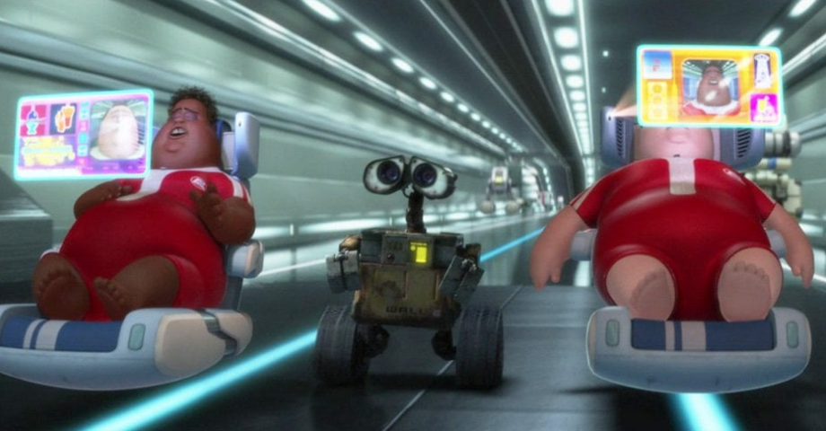

This is an idea that I have thought about off and on for at least several months now. I think it started when I watched Planet of the Apes (1968), and in that film humans have devolved to a primitive state.
They could not speak, they couldn't even think. They were almost like cattle in a sort of sense in that they lived out in the woods and were hunted for sport by the apes.
Now the movie was an anti-war message, meaning that the film was criticizing warfare and violence more than anything else. And yet I can't help but to think of what we're seeing in the world now, and our modern technology, and wonder if in the future humans could regress like that.
I'm just going to start listing various facts about how we are all right now.
Each of the above bullet points was an example of how we have all been psychologically damaged we could say and it's a mix of modern tech and also a failure of the education system as well.

When you don't have to think or improvise anymore, you become stagnant. Learning is important for your own personal, spiritual, and mental development. And technology (in some ways) has made our life "easier."
Instead of having to walk everywhere, you can drive. Instead of looking at an analog clock and needing to know how to read it, you can look at a digital clock and just see the numbers.
Instead of writing in cursive, you can just write in print. Scratch that, you can just type instead and lose the fine motor skill of writing. You don't need to write out math or do it in your mind when you have a calculator, etc etc etc.
I guess I sort of believe in challenging myself, learning new facts and how to do new things. I prefer the analog way of doing things rather than digital.
I guess that's why I like trying the terminal on Linux and playing Java Minecraft instead of Bedrock lol.
Now for a lot of issues that I talk about, I usually see it as if we don't get ourselves together, our only hope is a higher power that's out there.
Yet I have to come to terms with the fact that we were all given Free Will. And I feel that it very well may be that if we make our bed, we have to lie in it. And it's funny in a sort of sense because even studying different scriptures will help train your brain.
Not to say that I believe in a God that gets defeated by smartphones, but rather I believe in humanity being undone by itself (a.k.a. it's own creations like Capitalism, or Technology.)
Could at least some humans go feral in the future? Whether it's 300 years from now or a thousand? I don't know the answer but it's still interesting for me to think about and since this is my blog then I'm just going to spew out the random questions that I have that most people probably don't care about lol.
Return to main page